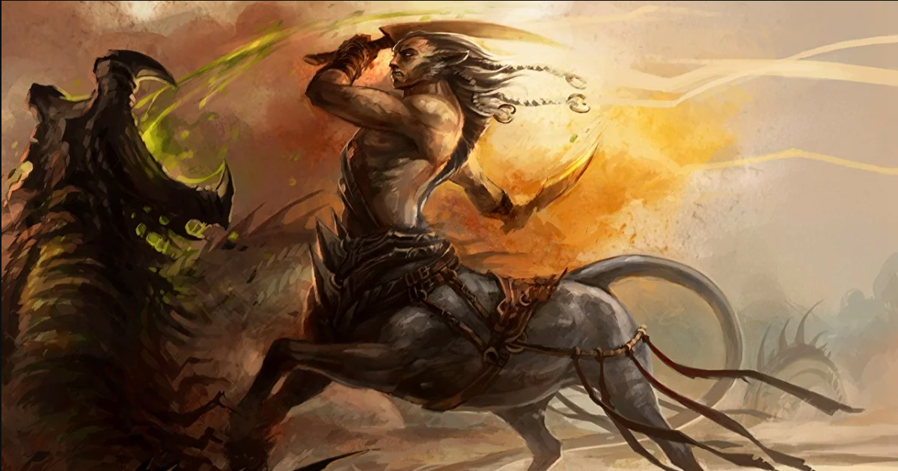
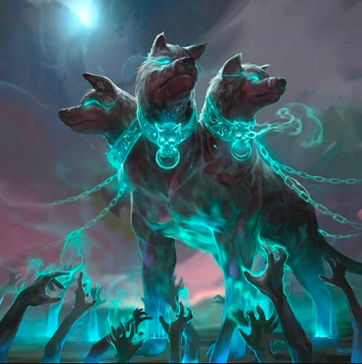
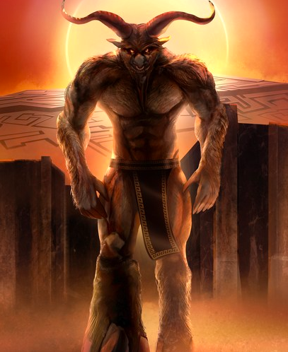
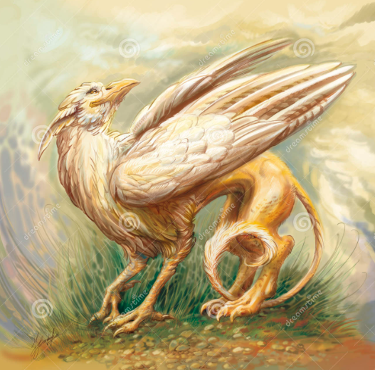

Criaturas Mais Famosas
Na mitologia grega, existem vários tipos de monstros e criaturas aterrorizantes, que muitas vezes são resultado de algum tipo de maldição ou punição, mas também alguns são filhos de deuses.
Em geral, eles são assustadores principalmente por causa de sua enorme força e poder, em alguns casos, de sua aparência assustadora, como Cerberus e Echidna. Desses monstros da mitologia grega, o mais feroz é considerado Typhon, o último filho da deusa Gaia.
Embora esses monstros sejam fictícios, a crença nessas criaturas ainda era difundida há menos de dois séculos. No caso dos antigos gregos, histórias de deuses e heróis, conceitos de natureza e mundo, e seus cultos e práticas rituais fizeram parte da cultura popular por milhares de anos. Podemos citar algumas criaturas mais conhecidas:
• Centauro. Criatura com dorso, cabeça e braços de ser humano e pernas e corpo de cavalo... 
•QUIMERAS , um monstro com cabeça de leão num corpo de cabra e com uma cauda de serpente.

•CÉRBERO um monstruoso cão de três cabeças que guardava a entrada do mundo inferior, 
•MINOTAURO homem com cabeça e calda de Touro 
•GRIFOS criatura mitológica que tem o corpo de leão, a cabeça e as asas de uma águia 